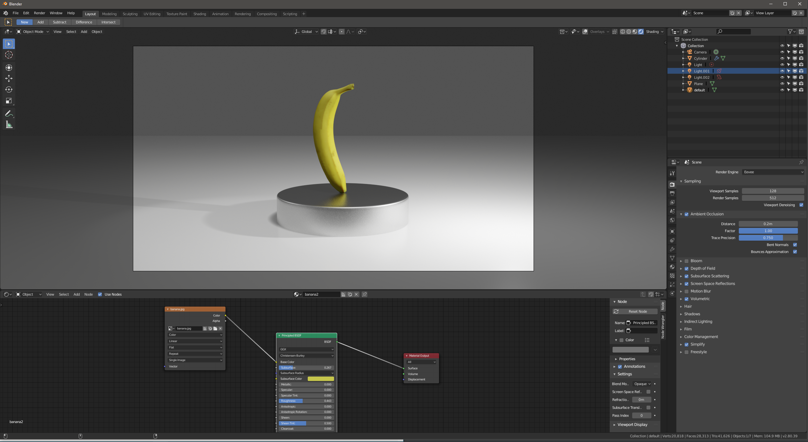
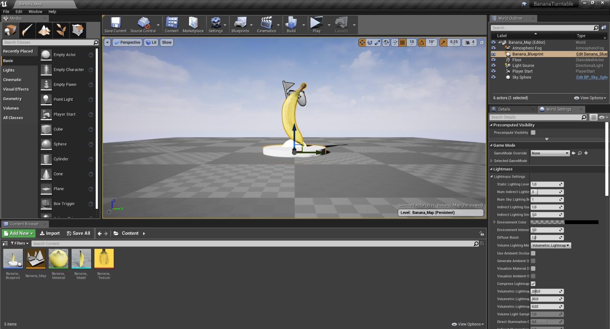
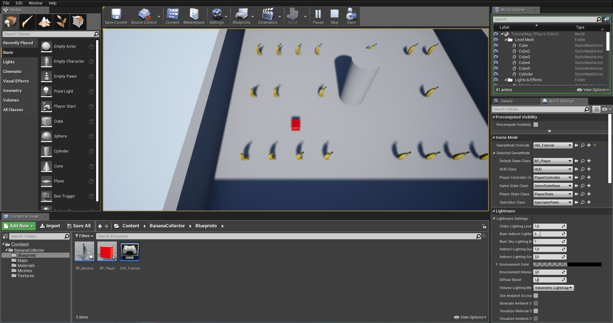
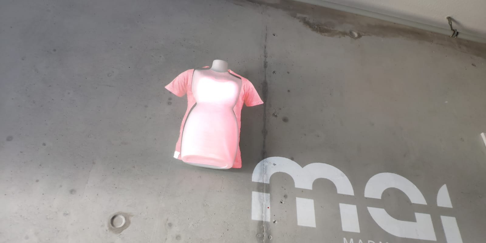
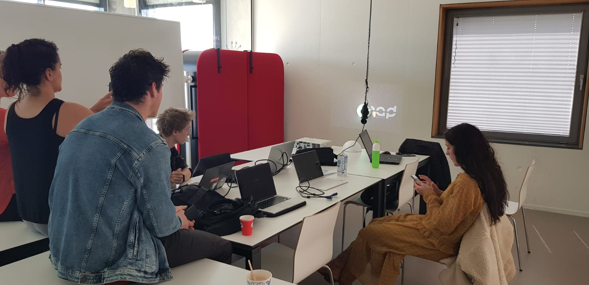
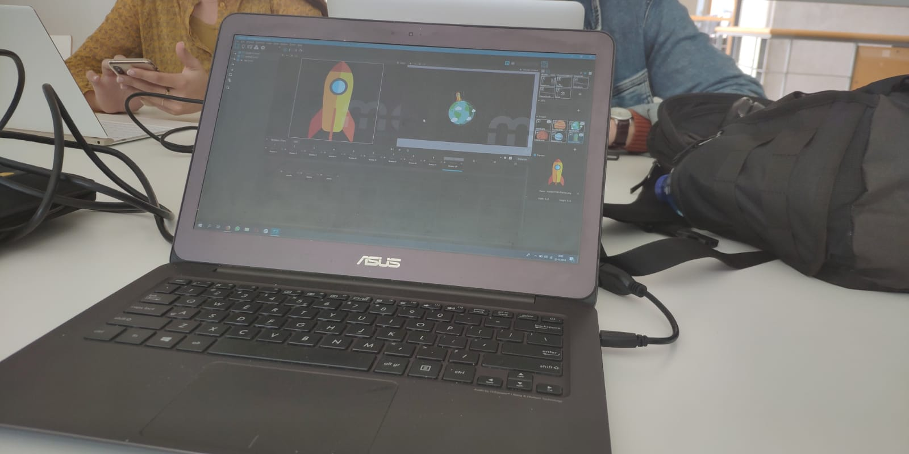

Unreal
Assignment
Ik heb zelf de enige ervaring met Blender, en ander 3D programma dat een eigen modeling, material editor, animator, en renderer heeft. De basisfuncties en manieren zijn praktisch hetzelfde, al vind ik het zelf een stuk omslachtiger in Unreal Engine dan in Blender. Omdat alles zo high-level is moet je werkelijk alles definiëren. Deze control is een float, komt van het toetsenbord, die komt van de computer, die gaat naar een scene, in die scene zit een object, dat object heeft een controller, etc. Daar had ik wel enige moeite mee. Unreal Engine heeft natuurlijk wel een snelle render engine die niet met Raytracing werkt, wat in die optiek Unreal Engine wat gemakkelijker maakt voor AR of VR (al heeft Blender sinds kort een zeer snelle engine die zeker een concurrentie voor Unreal is).
Voor de grap heb ik diezelfde scene even in Blender nagemaakt, die zelf ook een game engine heeft. Het kostte mij 5 minuten de tijd om de banaan en de verlichting in orde te maken, en 10 minuten om camera en de beweging te programmeren. Om een kort verhaal nog korter te maken, mocht iedereen een hekel hebben aan Unreal Engine dan zijn er genoeg alternatieven.

Het werken in een 3D omgeving spreekt mij wel heel erg aan. Ik heb ook altijd al wel een app of iets willen maken dat een object of een event projecteert in de real world ala AR. Op mijn werk hebben we de nodige VR apparatuur beschikbaar, al vereist dat wel om een hele wereld uit het niets op te bouwen. De mengeling tussen real world en toegevoegde wereld vind ik daarom wel heel interessant. Ik vraag mij echter wel af of ik dit uit zou willen voeren met iets als Unreal Engine. Dan ga ik liever op zoek naar een manier om de scripting en/of modeling in Blender te doen en de rendering door Unreal Engine of een andere renderer te laten verlopen.
Projection Mapping
Assignment
In een groepje van 6 heb ik de opdracht van Spatial Augmented reality uitgevoerd. Hier was het de bedoeling om via MadMapper een projectie mapping te doen op een object. Na rondgesnuffeld te hebben in het lokaal en wat overlegd te hebben binnen het groepje kwamen wij op het idee om een “kledingkast-spel” te doen waar je zelf kleding kon kiezen die geprojecteerd zou worden op een piepschuimen lichaam. Toen we eenmaal het programma en de beamer werkend kregen heb ik de vorm geprobeerd na te maken in MadMapper en hebben we wat kledingstukken verzameld. We kwamen er toen wel achter dat het er erg onprofessioneel uit ging zien, en dat de kledingstukken moeilijk passend gemaakt konden worden. De les was afgelopen en we hebben besloten het de volgende dag weer te proberen.
 We zijn even rond de tafel gaan zitten en ik kwam op het idee om een aardbol en een raket te maken. Een bol is een makkelijke vorm om op te projecteren, en we zouden via de microfoon de raket op kunnen laten stijgen en naar een andere planeet laten vliegen. Dat laatste was helaas niet gelukt omdat ik niet makkelijk uit het programma kwam. Ik vind het überhaupt een slechte zaak dat we de demo-versie van een software moeten gebruiken waarbij opslaan niet eens mogelijk is, wanneer er ook alternatieven als Lightform en HeavyM zijn. Dat terzijde heb ik de animatie en de projectie wel werkend gekregen, en hebben wij een simpele projectie-animatie werkend gekregen en begint de animatie na het klappen van je handen.
Ik heb in het groepje de projectie en de animatie gedaan (praktisch alle technische en creatieve zaken, de rest van het groepje wilde zich daar niet in mengen). Karen heeft het filmpje gemaakt, en met de rest van het groepje zijn we met de concepten bezig geweest.